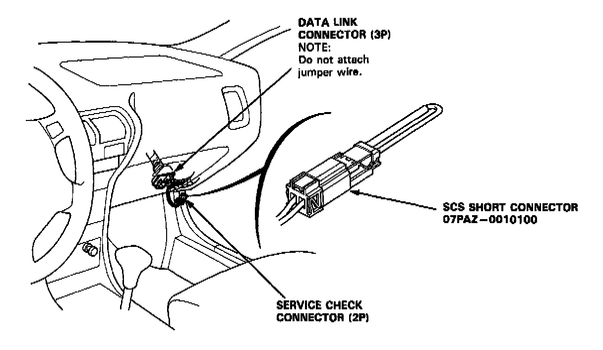
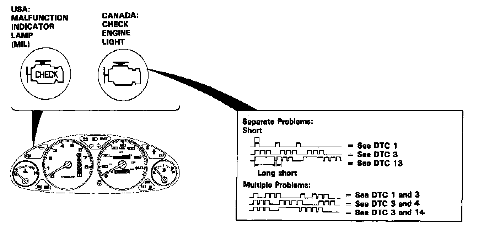
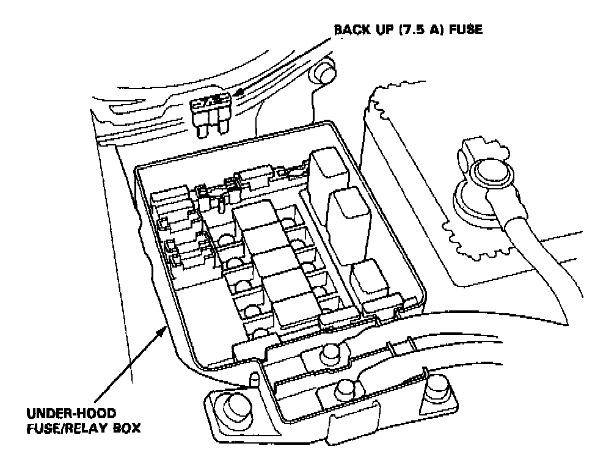

Without Scan Tool

SELF-DIAGNOSTIC PROCEDURE
When the Malfunction Indicator Lamp (MIL) has been reported on, do the following:
1. Connect the SCS short connector to Service Check Connector as shown. (The 2P Service Check Connector is located under the dash on the passenger side of the car.) Turn the ignition switch on.

2. Note the Diagnostic Trouble Code (DTC): The MIL indicates a code by the length and number of blinks. The MIL can indicate multiple component problems by blinking separate codes, one after another. Codes 1 through 9 are indicated by individual short blinks. Codes 10 through 43 are indicated by a series of long and short blinks. The number of long blinks equals the first digit, the number of short blinks equals the second digit. Sometimes the first blink is difficult to see; always count the blinks at least twice to verify the code.

ENGINE CONTROL MODULE (ECM) RESET PROCEDURE
1. Turn the ignition switch off.
2. Remove the BACK UP (7.5 Al fuse from the under-hood fuse/relay box for 10 seconds to reset the ECM.
FINAL PROCEDURE (This Procedure Must Be Done After Any Troubleshooting)
1. Remove the SCS Short Connector.
NOTE: If the SCS short connector is connected and there are no DTCs stored in the ECM, the MIL will stay on.
2. Do the ECM Reset Procedure.